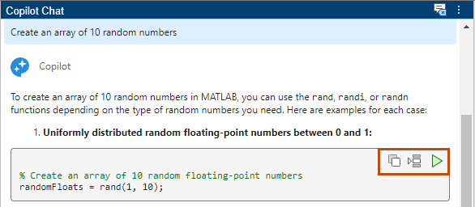
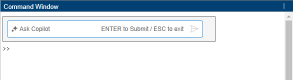
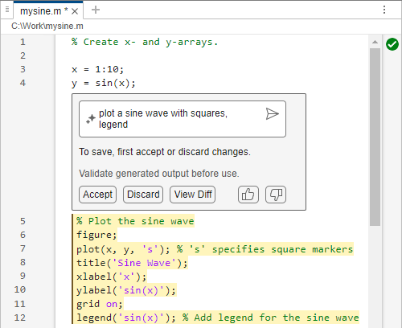
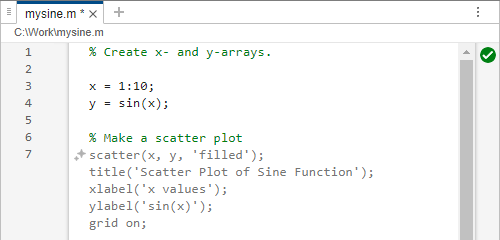
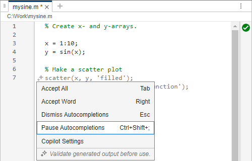
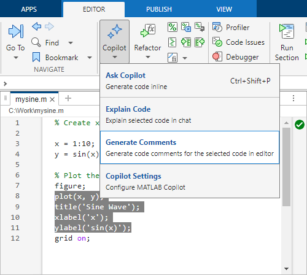
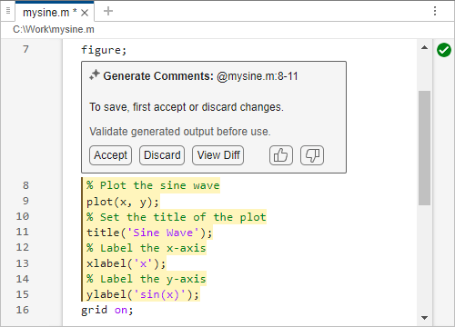

Generate and Modify Code Using MATLAB Copilot
MATLAB® Copilot provides generative AI–powered capabilities specifically for the MATLAB desktop environment. You can ask questions, generate code, and use follow-up prompts and links to documentation. In the Copilot Chat panel, you can effectively have a conversation with Copilot that helps you solve a problem using MATLAB. Copilot Chat responses are grounded by relevant MathWorks® documentation and code examples.
You can ask MATLAB Copilot to generate and modify code in several ways:
Copilot Chat — Use the Copilot Chat panel to explore different solutions to a problem or question. Copilot provides responses that include explanations, generated code, references, and follow-up prompts. You can insert code from the chat into your code in the Editor or Live Editor, or you can run it in the Command Window.
Ask Copilot — Use the Ask Copilot text box to generate code inline as you work in the Editor, Live Editor, or Command Window. Copilot provides responses as formatted code and comments directly in your code area, which you can accept or discard. If you want to have a conversation with Copilot instead, use the Copilot Chat panel.
Autocompletions — Use autocompletions to generate code predictions based on your code and comments as you work in the Editor or Live Editor.
In general, use Copilot Chat for exploration. Its responses can include both conversational text and generated code. Use the Ask Copilot text box and autocompletions to generate code and comments that you can accept or discard.
Chat with Copilot to Generate Code
When you start MATLAB, the Copilot Chat panel appears on the right.

You can enter prompts—statements or questions that you write using natural language—in the Ask Copilot box.
For example, enter this prompt:
Create an array of 10 random numbers
Copilot returns a response that can include generated code, references to documentation, and follow-up prompts. If you write a prompt in a language other than English, Copilot returns a response in that language.

Insert or Run Code from Chat
When Copilot generates code, you can insert it into your code file or run it in the Command Window. You can also copy it to the clipboard to manually paste the generated code where you want.
Copilot returns generated code in code boxes. Every code box includes these three buttons:
— Copy code to the clipboard.
— Insert code in the Editor or Live Editor. Copilot inserts the generated code at your cursor location in the open file. If no file is open, then this action opens an untitled file in the Editor and inserts the code.
— Run code in the Command Window.

Generate Code Inline in Editor or Command Window
You do not need to use the Copilot Chat panel to generate code. You can generate code inline as you work in the Editor, Live Editor, or Command Window. When you first start MATLAB or open a new code file, you see this keyboard shortcut hint:
Press Ctrl + Shift + P to generate code with
Copilot
You can perform this action at any time. When you press Ctrl+Shift+P, or right-click and select Copilot > Ask Copilot from the context menu, an Ask Copilot text box opens at your current cursor location in the Editor, Live Editor, or Command Window. Alternatively, in the Editor or Live Editor, select Copilot > Ask Copilot on the Editor or Live Editor tab of the MATLAB Toolstrip.

For example, in a code file, create a vector x of values from 1 to 10
and a vector y of sine values.
x = 1:10; y = sin(x);
Then ask Copilot to plot a sine wave by pressing Ctrl+Shift+P and
typing plot a sine wave in the text box that appears. Copilot generates
the requested code under the text box. The generated code is highlighted, and you can choose
to:
Accept the generated code.
Discard the generated code.
Revise the prompt you typed to improve the generated code.
Provide feedback using the and buttons.

Modify Generated Code with Copilot
Copilot might generate code that does not precisely match your expectations. In that case, you can ask Copilot to modify the code it just generated. You can highlight the generated code and provide Copilot with another prompt that provides more details.
For example, ask Copilot to modify the plotting code it generated in the previous
example, by adding square markers and a legend. If you already accepted the generated code,
highlight it, and press Ctrl+Shift+P or select Copilot > Ask Copilot. In the text box, write a new prompt with more details (for example,
plot a sine wave with squares, legend) and press
Enter. You can accept the modified code, discard it, or view the
differences between it and the previously accepted code.

Generate Code with Autocompletions
In the Editor and Live Editor, you can also use Copilot autocompletion to generate code predictions. While MATLAB tab completion can complete function names or arguments, Copilot autocompletion can generate code based on the code and comments you have written. To use Copilot autocompletion:
In the Editor or Live Editor, type a comment, a function name, or some lines of code.
To generate code predictions using Copilot autocompletion, press the Enter key. The code appears as a suggestion in dimmed text at your cursor location.
To accept the suggestion, press Tab.
To accept the next word of a suggestion composed of many words, press Right Arrow.
To discard the suggestion, press Esc.
To see the context menu of autocompletion options, click the button.
For example, write a script that calls the sin function and then
the plot function. Then press Enter. Copilot
autocompletion generates code for a next possible step. The generated code includes a
comment that describes the suggestion.

Now write a script that calls the sin function. Instead of calling
plot, add a comment that says, "Make a scatter plot." Then press
Enter. Copilot autocompletion treats that comment as a prompt and
generates code accordingly.

If you find autocompletions too obtrusive, then you can pause autocompletions and resume them later. When you pause autocompletions, Copilot does not generate code, but you still have access to the autocompletion context menu. When you resume autocompletions after you had paused them, Copilot can generate code again.
To pause autocompletions, open the autocompletion context menu by clicking the button to the left of the suggestion and select Pause Autocompletions. The menu includes options to accept or dismiss suggestions, pause autocompletions, or go to Copilot settings.

To resume autocompletions after they have been paused, click the button and select Resume Autocompletions. (When autocompletions are paused, the stars are unfilled and the context menu changes to offer the Resume Autocompletions option.)
You can also pause autocompletions or disable them entirely by changing Copilot settings in the Settings window. For more information, see Change MATLAB Copilot Settings.
Generate Comments
You can ask Copilot to generate comments for your code. To generate comments, highlight code in your file and select Copilot > Generate Comments on the Editor or Live Editor tab. Or, right-click and select Copilot > Generate Comments from the context menu.

You can accept or discard the generated comments, or view the differences between your code and the commented code. You can also send feedback on the generated comments by clicking or .
